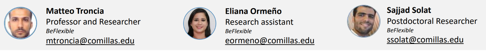

MT
Matteo Troncia
Professor and Researcher
BeFlexible
Research leadership across electricity-market design, distribution-system flexibility, system services, and regulatory coordination.
mtroncia@comillas.eduWho we are
We develop structured ways to compare flexibility acquisition mechanisms and invite expert scrutiny before concepts become institutional or digital designs.
Research leadership across electricity-market design, distribution-system flexibility, system services, and regulatory coordination.
mtroncia@comillas.eduResearch support linking literature, demonstrator evidence, stakeholder needs, and structured mechanism design.
eormeno@comillas.eduResearch on flexibility acquisition, local markets, network-aware coordination, computational frameworks, and interactive expert-review platforms.
ssolat@comillas.edu